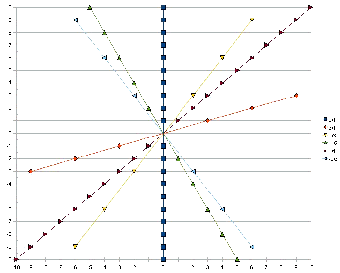

Nous avons maintenant tout ce qu'il faut pour construire effectivement l'ensemble des rationnels. Considérons l'ensemble ℤ×ℤ* dont les éléments sont donc les couples (x,y) où x ∈ ℤ et y ∈ ℤ avec y ≠ 0.
définition
Nous appellerons encore de tels couples des 'fractions' , la première coordonnée s'appelant le numérateur et la seconde le dénominateur, conformément à la terminologie adoptée pour les .
Nous munissons cet ensemble d'une relation binaire: (x,y) ≡ (x',y') ⇔ xy'=yx' Nous pouvons vérifier instantanément qu'il s'agit là d'une .
définition
L'ensemble des nombres 'rationnels' est le de ℤ×ℤ* par cette relation d'équivalence, cet ensemble se note ℚ.
Ainsi un nombre rationnel apparaît comme une de couples. Sur le qui suit on peut voir que les couples représentant d'une même fraction sont alignés sur des droites passant par l'origine.
Definition
We now have everything we need to actually build the set of rationals. Consider the ℤ×ℤ* whose elements are therefore the ordered pairs (x,y) where x ∈ ℤ and y ∈ ℤ with y ≠ 0.
definition
We will still call such pairs 'fractions' , the first one coordinate being called the numerator and the second the denominator, in accordance with the terminology adopted for the .
We endow this set with a binary relation: (x,y) ≡ (x',y') ⇔ xy'=yx' We can instantly verify that this is an .
definition
The set of 'rational numbers' is the of ℤ×ℤ* by this equivalence relation, this set is noted ℚ.
Thus a rational number appears as an of ordered pairs. On the which follows we can see that the couples representing of the same fraction are aligned on straight lines passing through the origin.

Notations
notation
Formellement la classe de (-2,3) se note (-2,3) mais nous la noterons aussi -2/3 conformément aux usages pour les notations des
notation
Toutes les fractions de numérateur 0 sont équivalentes nous notons le rationnel correspondant 0. 0= (0,y) ∀ y ∈ ℤ
notation
le rationnel p/1 = (p,1) sera noté simplement p. p= (x,y) ⇔ x=py.
Notations
notation
Formally the class of (-2.3) is written (-2.3) but we will also note it -2/3 in accordance with the habits of .
notation
All fractions with numerator 0 are equivalent we note the corresponding rational 0. 0= (0,y) ∀ y ∈ ℤ
notation
the rational p/1 = (p,1) will simply be denoted p. p= (x,y) ⇔ x=py.